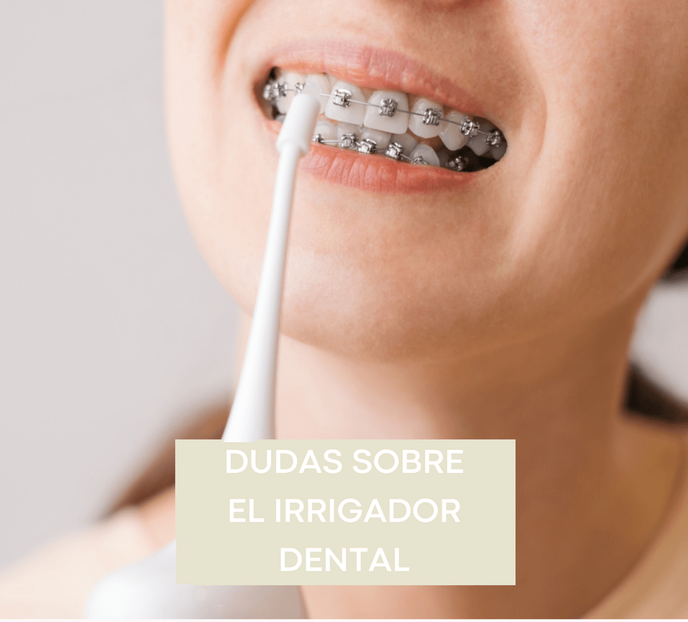

DUDAS MÁS FRECUENTES SOBRE LOS IRRIGADORES

Se oye mucho hablar de irrigadores dentales domésticos últimamente, pero muy poca gente sabe cómo utilizarlos, para qué sirven realmente o incluso dudan de todas las contraindicaciones que hay. Debido a las múltiples preguntas que pueden surgir sobre este tema, vamos a resolver las más frecuentes:
¿Qué es un irrigador dental y para qué sirve?
Un irrigador dental es un dispositivo de higiene oral, cuyo mecanismo de acción es la salida de un chorro de agua a presión. El irrigador dental sirve como complemento para nuestra higiene diaria, pero NO es eficaz para la eliminación de sarro, ya que éste está muy adherido a las superficies dentales.
Estos instrumentos ayudan a eliminar toda la placa bacteriana que el cepillo, ya sea eléctrico o manual, no ha podido eliminar.
¿El irrigador dental sustituye al cepillo?
Es muy importante tener en cuenta que los irrigadores dentales se utilizan como COADYUVANTES y NUNCA como sustitutos de los cepillos dentales.
¿Cómo usar un irrigador dental?
Lo primero que hay que hacer es llenar el depósito con agua del grifo y elegir la boquilla que mejor se adapte a nuestras necesidades. Existen boquillas específicas para para implantes, prótesis e incluso ortodoncia. Después hay que poner la presión del agua al mínimo e ir probando y ajustando la presión de agua hasta que sea suficiente, sin llegar a sentir ninguna molestia o dolor.
Una vez seleccionada la presión, vamos a poner la boquilla 90º respecto al diente y vamos a ir pasándola por la línea de la encía, empezando por las muelas y siguiendo hasta la parte anterior de nuestras bocas. No importa si se empieza por la arcada superior o por la inferior, siempre y cuando se haga por la parte de fuera y por la parte de dentro de los dientes, de ambas arcadas. Es importante hacerlo en el lavabo del aseo y con la boca cerrada para evitar que se ensucie el suelo.
¿Cuántas veces al día hay que utilizar el irrigador dental?
Los irrigadores dentales pueden utilizarse siempre después de cada cepillado, pero al ser un complemento, si te pasas la seda dental o los cepillos interproximales, no hace falta que después de cada cepillado utilices el irrigador. Si dispones de uno, lo ideal es utilizarlo 1 vez al día.
¿Cuál es el mejor irrigador dental? ¿Qué irrigador comprar?
Hay infinitas marcas que venden irrigadores dentales y las diferencias entre uno y otro son insignificantes. No hay ningún irrigador en concreto que sea mejor que otro, la mayoría de gente recomendará uno u otro según si satisfacen sus necesidades o no. Hay una diferencia significativa entre los irrigadores habituales y los de viaje. Los de viaje tienen menor presión, por lo tanto, para algunas personas puede resultar insuficiente. No obstante, nosotros recomendamos a las personas que viajan bastante por trabajo, que se compren el portátil ya que, si no, no se usaría.
¿Dónde comprar un irrigador dental?
Las marcas más famosas son WaterPick, Oral-B, Nicwell y Apiker. Estos irrigadores, como cualquiera de otra marca, se pueden adquirir en farmacias, en tiendas online o físicas de las marcas que los venden, en el Corte Inglés, Mediamark o incluso en Amazon.
Me duelen los dientes cada vez que uso un irrigador, ¿puedo usarlo?
Los irrigadores dentales no producen ningún tipo de dolor en las encías ni en los dientes. Si cuando utilizas el irrigador sientes algún tipo de dolor, probablemente será un indicativo de que tienes alguna patología bucal. Podría provocar sensibilidad dental en caso de recesiones o caries, o incluso sangrado de encías cuando hay enfermedad periodontal. En caso de que el dolor persista en el tiempo y no sea algo puntual, incluso con la presión del agua al mínimo, no dudes visitarnos para hacer una exploración y descartar cualquier patología.
¿Si me sangran las encías no debería usar irrigador?
El sangrado de encías es un indicador de que algo sucede. Las encías rojas y que sangran son encías enfermas, podría ser gingivitis o incluso periodontitis. Debes acudir al dentista para solucionar la patología cuanto antes. El profesional te indicará las técnicas de higiene adecuadas para el mantenimiento adecuado de la salud oral, y el irrigador dental es un buen aliado.
¿Puedo usar un irrigador dental si tengo aparato en los dientes?
Claro que si. El aparato, ya sean brackets o cualquier tipo de ortodoncia, generan muchas retenciones entre los dientes, y un irrigador dental te facilitaría mucho la higiene de todos esos recovecos. Nuestra ortodoncista, sin duda los recomienda siempre.
¿Es peligroso usar un irrigador dental?
No es para nada peligroso. Por muy potente que sea el agua a presión, si no hay ninguna patología, se puede usar sin problemas. Hay que seguir las instrucciones del fabricante y tu higienista y no habrá ningún peligro.
¿Qué contraindicaciones existen para los irrigadores dentales?
Indicaciones:
- Cualquier persona
- Prótesis sobre implantes
- Prótesis fijas
- Tendencia a la gingivitis y periodontitis
- Mantenimientos periodontales
Contraindicaciones:
- Cualquier afta, úlcera o llaga, no echar el chorro de agua en esas zonas.
- Si su odontólogo le indica que no conviene que lo utilice.
- Si no sabe cómo orientar el agua a presión, ya que puede causar lesiones en las encías.
Si después de resolver todas estas dudas, la tuya sigue sin resolverse, no dudes en llamarnos y hacernos una visita. ¡Te esperamos!